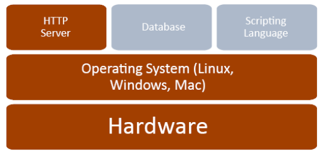
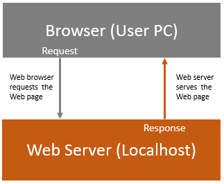

This course is a good starting point for students with little or no programming experience wishing to uncover the fundamentals of software engineering. It explains internet technology and delivers practical know-how for associated world wide web programming languages. Students will emerge with an increased confidence to communicate with Information Technology colleagues while attaining a sound basis on which to try software programming at a more advanced level.
No previous computing knowledge is required, but each student must supply their own Windows 10 laptop.
The Summer 2019 course is underway in Newcastle upon Tyne where three students are in attendance. The numbers of interested students will influence the timetable, location and number of participants. However, the Winter 2019 course is likely to be held in November and December, include a small group of 3 - 5 students and be located at either Newcastle or Sunderland. If necessary, additional courses may be made available over the same period.
Take the time read the key technical terms as suggested below. The opportunity to have them explained in context might help you to decide on whether or not this is suitable for you. The course is made up of six 1 hour tutorials. However, any changes to the number and duration of tutorials may vary as agreed by participants.
1. Terminology Review
2. Webserver Configuration and Integrated Development Environment (IDE) Evaluation.
3. Web Tool Configuration and Verification (an evaluated comparison of Webuilder and CodeLobster).
4. Practical Examples and Associated Code Review
5. Project Selection
6. Online tools, tutorials, examples and exercises.
You may know some of the following terms or at least you may have heard of them. Read through the list below and make a note of anything that isn't fully clear to you. Make an attempt to digest the information and when appropriate (during our initial tutorial) the terms will be reviewed with you to resolve any and all queries you might have. Also, the terms will make more sense as and when we take a look at practical examples; a good opportunity for further clarification. Don't be put off, the idea is to feel at ease with these terms when we reach the end of our project. Additional terms together with corresponding descriptions will be added as needed for completeness.
It was once said that the great leap forward is best accomplished in short comfortable hops. We can always decide how short and how comfortable hops will be as we progress.
Operating System
Software that controls the functionality of a computer and directs the processing of programs by assigning storage space in memory and controlling input and output functions. Say, Microsoft's Windows 10.
Browser
All users access the web through web browser software, which is included on computers and mobile devices at the time of purchase. Other browsers can be downloaded from the internet. A browser is a free software package or mobile app that displays web pages, graphics, and most online content. Popular web browsers include Chrome, Firefox, Internet Explorer, Microsoft Edge, and Safari, but there are many others. Browser software is specifically designed to convert HTML and XML computer code into human-readable documents. Browsers display web pages. Each web page has a unique address called a URL (see below).
Localhost
A localhost refers to "this computer" or even more accurately "the computer I'm working on."
Let's say you wanted to call your own cellphone to test a ringtone you created. You could dial your telephone number to see what happens. However, you'd have to dial the entire number as it goes out throughout the cellphone network, as if you're calling any outside number. What if instead you could simply punch in a name like "thisphone" and it would work, as if you dialed your number and routed it via the network normally?
When you try to establish a network connection to the localhost (loopback) address, it avoids connection to the local network interface hardware (and therefore doesn't require internet access). The bulk of our development and testing will be conducted using localhost.
Remote Host
A computer that resides in some distant location from which data is retrieved. Web site hosting is the business of housing, serving, and maintaining files for one or more Web sites. The remote host I use is provided by iPage. So, for example, my website files (for www.itgis.org) are stored on one of iPage's computers in California.
ISP
You need an Internet Service Provider (ISP) to get to the internet. You may access a free ISP at school, a library or work, or you may pay for a private ISP at home. An ISP is the company or government organization that plugs you into the vast internet. An ISP offers a variety of services for a variety of prices: web page access, email, web page hosting, and so on. Most ISPs provide various internet connection speeds for a monthly fee. You may choose to pay more for a higher-speed internet connection if you like to stream movies or select a less expensive package if you use the internet mostly for light browsing and email.
Router
A router or router-modem combination is the hardware device that acts as the traffic police for network signals arriving at your home or business from your ISP. A router can be wired or wireless or both.
IP Address
Your computer and every device that connects to the internet uses an Internet Protocol address for identification. In most cases, IP addresses are assigned automatically. To find your IP Address click here. There are currently two version of Internet Protocol (IP): IPv4 and a new version called IPv6. The local or internal IP address is the address that is assigned by your local network router. Local IP addresses can only be seen by other computers in your local network and not by any computers connected in an external network such as on the Internet.
Domain Name
Domain names are easy-to-remember words that we can use to tell a DNS server the website we want to visit. The Domain Name System (DNS) is what translates the friendly name to an IP address.
.org is a top-level domain name (TLD)
itgis.org is a second-level domain name (SLD)
sagesse.itgis.org is a third-level or three-part domain name
project.sagesse.itgis.org is a fourth-level or four-part domain name
A top-level domain name is never used by itself. It is always combined with at least a second-level domain name.
Protocol
A standard procedure for regulating data transmission between computers, for example, TCP/IP, or the Transmission Control Protocol/Internet Protocol, is a suite of communication protocols used to interconnect network devices on the internet.
TCP/IP describes rules for dividing messages into small pieces, called packets; providing addresses for each packet; checking for and detecting errors; sequencing packets; and regulating the flow of messages along the network. Connections must be properly established in a multi-step handshake process (connection establishment) before entering the data transfer phase. Hypertext Transfer Protocol (HTTP) is a member of the TCP/IP family.
HTTP
Hypertext Transfer Protocol is used to transfer data over the web. It is part of the Internet protocol suite and defines commands and services used for transmitting webpage data and might read something like:
Browser: I'm about to send a message Localhost: Is that you making a request Browser: Yes It's Me Localhost: Send it then; Browser: That's it sent. Localhost: I acknowledge that you've sent a message Browser: I'm waiting for confirmation that you received the message Localhost: Message received OK (response status 200).
HTTP is used to transmit resources (almost anything that can be obtained via the Internet) it's the R in URL. HTTPS is used for secure communication over a computer network.
URL
Uniform Resource Locators are the web browser addresses of internet pages and files. A Uniform Resource Identifier (URI) is a string of characters that unambiguously identifies a particular resource. The most common form of URI is the Uniform Resource Locator (URL), frequently referred to informally as a web address.
The URL for my website is https://www.itgis.org. URLs consist of multiple parts including a protocol and domain name that tell a web browser how and where to retrieve a resource.
Web Server
A web server is a system that delivers content or services to end users over the internet. A web server consists of a physical server, server operating system (OS) and software used to facilitate HTTP communication.
A web server is also known as an internet server. See WAMP below also.
HTML (early hops)
Hypertext Markup Language (HTML) is the programming language of web pages. HTML commands your web browser to display text and graphics in a specific fashion.
CSS (early hops)
Cascading Style Sheets (CSS) is a style sheet language used for describing the presentation of a document written in a markup language like HTML
Javascript (early hops +)
A JavaScript developer is responsible for implementing the front-end logic that defines the behavior of the visual elements of a web application. JavaScript developers often work alongside other HTML web developers who specialize in markup and styling.
PHP (later hops)
A PHP (Hypertext Preprocessor) developer is responsible for writing server-side web application logic. PHP developers usually develop back-end components, connect the application with the other (often third-party) web services, and support the front-end developers by integrating their work with the application.
MySQL (later hops +)
MySQL (My Structured Query Language) is an Oracle-backed open source relational database management system (RDBMS) based on Structured Query Language (SQL). SQL is the most popular language for adding, accessing and managing content in a database. What is MySQL? - Definition from WhatIs.comMySQL runs on Windows and many other operating systems. Although it can be used in a wide range of applications, MySQL is most often associated with web applications and online publishing.
WAMP The first practical task is to install this free (open source) server on each hardware device (localhost).
 The acronym WAMP refers to a set of applications, combined with Microsoft Windows, which are commonly used in Web server environments. The WAMP stack provides developers with the four key elements of a Web server: an Operating System, Database, HTTP Server and Scripting Language. The Hardware is the physical component of the computer system in which the stack resides.
The combined usage of these programs is called a server stack. In this stack, Microsoft Windows (W) is the operating system, Apache (A) is the HTTP (Web) server, MySQL (M) handles the database components while PHP (P) represents the scripting language. Localhost is the hardware.
Static and Dynamic Web Pages
Web pages can be either static or dynamic. "Static" means unchanged or constant, while "dynamic" means changing or lively. Therefore, static Web pages contain the same prebuilt content each time the page is loaded, while the content of dynamic Web pages can be generated on-the-fly.
Standard HTML pages are static Web pages. They contain HTML code, which defines the structure and content of the Web page. Each time an HTML page is loaded, it looks the same. The only way the content of a purely HTML page will change is if the Web developer updates and publishes the file. However, embedding JavaSript code within HTML makes it possible to implement dynamic "browser-side" code for example to display the current time and date on the Web page.
Other types of Web pages, such as PHP pages are dynamic Web pages. These pages contain "server-side" code, which allows the Web server (or in our case localhost) to generate unique content each time the page is loaded. For example, the server may output a unique response based on a Web form the user filled out. Many dynamic pages use server-side code to access database information, which enables the page's content to be generated from information stored in the database.
Requests, Responses and Resources
The Hypertext Transfer Protocol (HTTP) is designed to enable communications between clients and servers. HTTP works as a request-response protocol between a client and server. A web browser may be the client, and an application on a computer that hosts a web site may be the server.
Example: A client (browser) submits an HTTP request to the server; then the server returns a response to the client. The response contains status information about the request (used internally) and may also contain the requested content.
All HTTP response status codes are separated into five classes (or categories). The first digit of the status code defines the class of response. The last two digits do not have any class or categorization role. There are five values for the first digit:
1xx (Informational): The request was received, continuing process
2xx (Successful): The request was successfully received, understood and accepted
3xx (Redirection): Further action needs to be taken in order to complete the request
4xx (Client Error): The request contains bad syntax or cannot be fulfilled
5xx (Server Error): The server failed to fulfill an apparently valid request
There are several different ways (methods) to make an HTTP (HTTPS) request. Two of the most common are GET and POST.
GET requests a representation of the specified resource (for example, click https://itgis.org/compliance.php?o=portuguese note in this case the resource (and response content) is 'portuguese' and https://itgis.org/compliance.php?o=deutsch where the resource and response content is 'deutsch').
POST submits the data to be processed (say, some user specific details as typed into a Web page: Name, DOB and so on) to an identified resource (URL). Essentially GET is used to retrieve remote data, and POST is used to insert/update remote data.
Getting Started
1. Check system type for 64 or 32 bit operating system. Right click 'This PC' in file explorer and click 'Properties'.
2. WAMP is a product of Alter Way (a French company with a telling array of clients). It's issued under the GPL (General Public License) the widely-used free software license, which guarantees end users the freedom to run, study, share and modify the software. WEBUILDER and CODELOBSTER are issued under more specific licenses Webuilder and Codelobster. Webuilder has an even more impressive customer protfolio. We'll work together to select, download and install the server and webuilder, validating each localhost as we go.
3. Tutorials References Examples and Exercises
4. Practical HTML and CSS
5. Next Steps
1 Notes
1.1 More on ISP.
You need an Internet Service Provider (ISP) to get to the internet. You may access a free ISP at school, a library or work, or you may pay for a private ISP at home. An ISP is the company or government organization that plugs you into the vast internet. An ISP offers a variety of services for a variety of prices: web page access, email, web page hosting, and so on. Most ISPs provide various internet connection speeds for a monthly fee. You may choose to pay more for a higher-speed internet connection if you like to stream movies or select a less expensive package if you use the internet mostly for light browsing and email. It might be an idea to check out the ISP you use at home - I use Virgin Media.
1.2 WAMP - Click to view another perspective. Note LAMP (Linux Operating System) and IIS (Internet Information Server - Microsoft's Webserver) are mentioned in this video. They simply identify common alternatives to our WAMP stack configuration - we won't be using them.
1.3 More on Apache
Apache is the most widely used web server software. Developed and maintained by Apache Software Foundation, Apache is an open source software available for free. It runs on 67% of all webservers in the world. It is fast, reliable, and secure. It can be highly customized to meet the needs of many different environments by using extensions and modules.
Apache is the software that receives your request to access a web page. It runs checks on your HTTP request and takes you to the web page. Depending on the page you have requested, the page may ask the server to run a additional programs (say, PHP and MySQL modules) while generating the document to serve you. It then serves you the document you requested.
While a web server is an essential part of any website, it’s important to note that we are unlikely to interact directly with the Apache HTTP web server. In other words Apache will normally function seamlessly in the background.
1.4 URL (Uniform Resource Locator) - IBM Overview
2.1 Microsoft Visual C++ Redistributable (msvcr pre-requisite).
2.1.1 Run Defender - Quick Scan.
2.1.2 Check architecture 32 bit or 64 bit.
2.1.3 Search for MSVCR110.dll - WAMP fails to install without it. If present go to 2.2.
2.1.4 Browse to https://www.microsoft.com/en-us/download/details.aspx?id=30679
2.1.5 Click DOWNLOAD and tick x64.exe and x86.exe if 64 bit but only x86.exe if 32 bit.
2.1.6 Install x64.exe for 64 bit.
2.1.7 Install x86.exe for both 32 bit and 64 bit.
2.1.8 Search for MSVCR110.dll
2.2 WAMP Installation
2.2.1 Space required ~ 3GB (C:)
2.2.2 Scroll up and click the WAMP link above.
2.2.3 DOWNLOAD WAMP 32 bit or 64 bit as appropriate.
2.2.4 Double click on the downloaded file and just follow the instructions. Everything is automatic.
2.2.5 The WampServer package is delivered with the latest releases of Apache, MySQL and PHP.
2.3 Webuilder Installation
2.3.1 Scroll up and click the WEBUIDER link above.
2.3.2 Click DOWNLOAD
2.3.3 Follow instructions and enter License Code XXXXX-XXXXX-XXXXX-XXXXX-XXXXX.
3.1 Open phpmyadmin and create a database 'users' and table 'credentials'.
3.2 Insert table column data for 'email' and 'password'.
3.3 Create a folder (first and last name initials) in www.
3.4 Copy html.html, css.html, js.html, php.php and mysql.php from folder ps in the USB (Universal Serial Bus) provided to your new folder.
3.5 Open the above files and browse using Webuilder.
3.6 If there are any problems with Webuilder then CodeLobsterIDE is an alternative Integrated Development Environment (30 day license).
3.7 Issue the browser command localhost/nn/filename for each of the above files.
3.8 Successful configuration of Apache Web Server and IDE (Webuilder) although Rory experienced a glitch (mysql php admin error while working with cache file tmp/twig .php). However, this doesn't impact progress. Paul to investigate.
3.9 Simple code examples for HTML, CSS, JavaScript, PHP and MySQL have been implemented and are working. A detailed examination of this code will follow in the next tutorial.
3.10 Jonny's issue with a laptop has not been resolved yet. Paul awaiting an update.